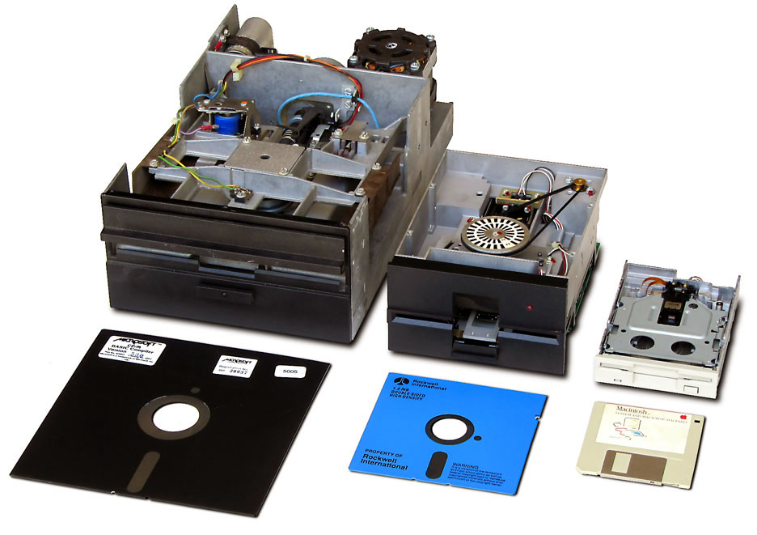
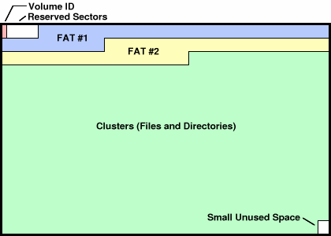
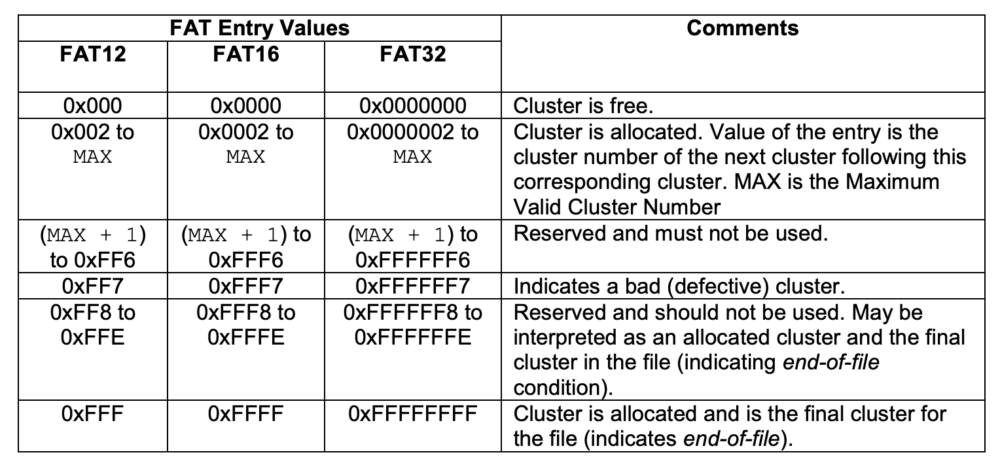
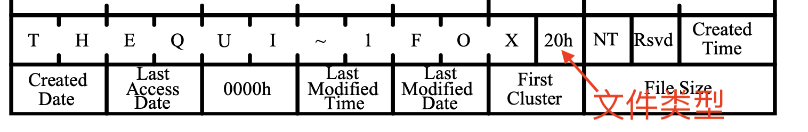
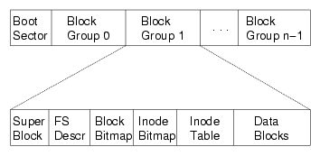
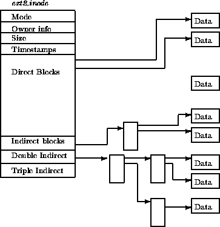
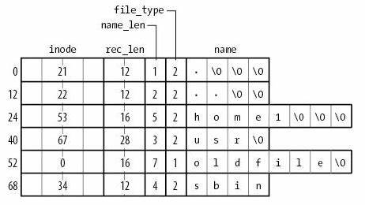

FAT 和 UNIX 文件系统
Overview
复习：文件系统 API
- 目录 (索引)
- “图书馆” - mkdir, rmdir, link, unlink, open, ...
- 文件 (虚拟磁盘)
- “图书” - read, write, mmap, ...
- 文件描述符 (偏移量)
- “书签” - lseek
本次课回答的问题
- Q: 如何实现这些 API？
本次课主要内容
- FAT 和 ext2/UNIX 文件系统
一、回到数据结构课
1、什么是文件系统实现？
在一个 I/O 设备 (block device) 上实现所有文件系统 API
bread(int id, char *buf);bwrite(int id, const char *buf);- 假设所有操作排队同步完成
- (可以在 block I/O 层用队列实现)
目录/文件 API
mkdir,rmdir,link,unlinkopen,read,write,stat
2、回到数据结构课……
文件系统就是一个数据结构 (抽象数据类型；ADT)
- 只是和数据结构课上的假设稍有不同
数据结构课程的假设
- 冯诺依曼计算机
- Random Access Memory (RAM)
- Word Addressing (例如 32/64-bit load/store)
- 每条指令执行的代价是
O(1)- Memory Hierarchy 在苦苦支撑这个假设 (cache-unfriendly 代码也会引起性能问题)
文件系统的假设
- 按块 (例如 4KB) 访问，在磁盘上构建 RAM 模型完全不切实际
3、数据结构的实现
Block device 提供的设备抽象
struct block blocks[NBLK]; // 磁盘
void bread(int id, struct block *buf) {
memcpy(buf, &blocks[id], sizeof(struct block));
}
void bwrite(int id, const struct block *buf) {
memcpy(&blocks[id], buf, sizeof(struct block));
}
在 bread/bwrite 上实现块的分配与回收 (与 pmm 类似)
在 balloc/bfree 上实现磁盘的虚拟化
- 文件 =
vector<char> - 用链表/索引/任何数据结构维护
- 支持任意位置修改和 resize 两种操作
在文件基础上实现目录
- “目录文件”
- 把
vector<char>解读成vector<dir_entry> - 连续的字节存储一个目录项 (directory entry)
二、File Allocation Table (FAT)
1、让时间回到 1980 年
5.25" 软盘：单面 180 KiB
- 360 个 512B 扇区 (sectors)
- 在这样的设备上实现文件系统，应该选用怎样的数据结构？

2、FAT 文件系统中的文件
int balloc(); // 返回一个空闲可用的数据块
void bfree(int id); // 释放一个数据块
vector<struct block *> file; // 文件
// 文件的名称、大小等保存在目录中
注意到这是相当小的文件系统
- 树状的目录结构
- 系统中以小文件为主 (几个 block 以内)
文件的实现方式
struct block *的链表- 任何复杂的高级数据结构都显得浪费
3、用链表存储数据：两种设计
- 在每个数据块后放置指针
- 优点：实现简单、无须单独开辟存储空间
- 缺点：数据的大小不是 2k; 单纯的 lseek 需要读整块数据
- 将指针集中存放在文件系统的某个区域
- 优点：局部性好；lseek 更快
- 缺点：集中存放的数据损坏将导致数据丢失
哪种方式的缺陷是致命、难以解决的？
方法一需要将整个磁盘都读取一遍，才能将空闲的block找到
方法二集中存放指针的话，集中存放区域容易损坏
4、集中保存所有指针
集中存储的指针容易损坏？存 n 份就行！
- FAT-12/16/32 (FAT entry，即 “next 指针” 的大小)

5、“File Allocation Table” 文件系统

RTFM 得到必要的细节
- 诸如 tutorial、博客都不可靠
- 还会丢失很多重要的细节
if (CountofClusters < 4085) {
// Volume is FAT12 (2 MiB for 512B cluster)
} else if (CountofCluster < 65525) {
// Volume is FAT16 (32 MiB for 512B cluster)
} else {
// Volume is FAT32
}
6、FAT: 链接存储的文件
“FAT” 的 “next” 数组
0: free;2...MAX: allocated;ffffff7: bad cluster;ffffff8-ffffffe,-1: end-of-file

7、目录树实现：目录文件
以普通文件的方式存储 “目录” 这个数据结构
- FAT: 目录 = 32-byte 定长目录项的集合
- 操作系统在解析时把标记为目录的目录项 “当做” 目录即可
- 可以用连续的若干个目录项存储 “长文件名”
- 思考题：为什么不把元数据 (大小、文件名、……) 保存在
vector<struct block *> file的头部？

8、Talk is Cheap, Show Me the Code!
首先，观察 “快速格式化” (mkfs.fat) 是如何工作的
- 老朋友：strace
然后，把整个磁盘镜像 mmap 进内存
- 照抄手册，遍历目录树：fatree.c
另一个有趣的问题 (M5 - frecov)
- 快速格式化 = FAT 表丢失
- 所有的文件内容 (包括目录文件) 都还在
- 只是在数据结构眼里看起来都是 “free block”
- 首先需要猜出文件系统的参数 (
SecPerClus,BytsPerSec,FATSz32,BPB_RootClus, ...) - 本质上是 cluster 的分类和建立 “可能后继关系”
9、FAT: 性能与可靠性
性能
- ＋ 小文件简直太合适了
- －但大文件的随机访问就不行了
- 4 GB 的文件跳到末尾 (4 KB cluster) 有 220 次链表 next 操作
- 缓存能部分解决这个问题
- 在 FAT 时代，磁盘连续访问性能更佳
- 使用时间久的磁盘会产生碎片 (fragmentation)
- malloc 也会产生碎片，不过对性能影响不太大
可靠性
- 维护若干个 FAT 的副本防止元数据损坏
- 额外的同步开销
- 损坏的 cluster 在 FAT 中标记
三、ext2/UNIX 文件系统
1、更好的文件系统：需要做到什么？
不能 “尽善尽美”，但可以在 “实际 workload” 下尽可能好
| Summary | Findings |
|---|---|
| Most files are small | Roughly 2K is the most common size |
| Average file size is growing | Almost 200K is the average |
| Most bytes are stored in large files | A few big files use most of the space |
| File systems contains lots of files | Almost 100K on average |
| File systems are roughly half full | Even as disks grow, file systems remain ~50% full |
| Directories are typically small | Many have few entries; most have 20 or fewer |
2、ext2/UNIX 文件系统
按对象方式集中存储文件/目录元数据
- 增强局部性 (更易于缓存)
- 支持链接
为大小文件区分 fast/slow path
- 小的时候应该用数组
- 连链表遍历都省了
- 大的时候应该用树 (B-Tree; Radix-Tree; ...)
- 快速的随机访问
3、ext2: 磁盘镜像格式
对磁盘进行分组

“superblock”：文件系统元数据
- 文件 (inode) 数量
- block group 信息
- ext2.h 里有你需要知道的一切
4、ext2 inode

5、ext2 目录文件
与 FAT 本质相同：在文件上建立目录的数据结构
- 注意到 inode 统一存储
- 目录文件中存储文件名到 inode 编号的 key-value mapping

6、ext2: 性能与可靠性
大文件的随机读写性能提升明显 (O(1))
- 支持链接 (一定程度减少空间浪费)
- inode 在磁盘上连续存储，便于缓存/预取
- 依然有碎片的问题
但可靠性依然是个很大的问题
- 存储 inode 的数据块损坏是很严重的
总结
本次课回答的问题
- Q: 如何在磁盘上实现文件系统 API？
- “图书馆” - mkdir, rmdir, link, unlink, open, ...
- “图书/书签” - read, write, mmap, lseek, ...
Takeaway messages
- 文件系统实现 = 自底向上设计实现数据结构
- balloc/bfree
- FAT/inode/...
- 文件和目录文件